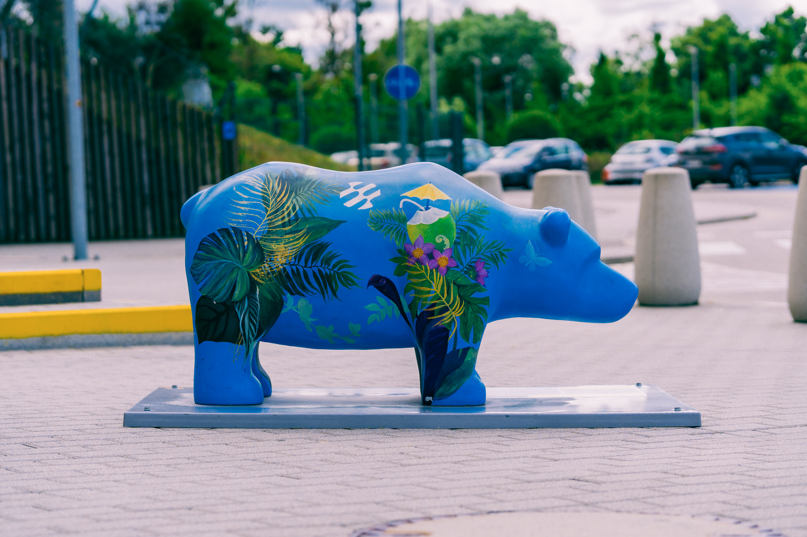
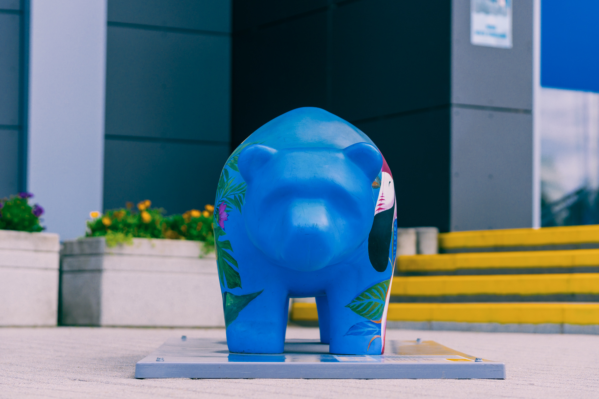
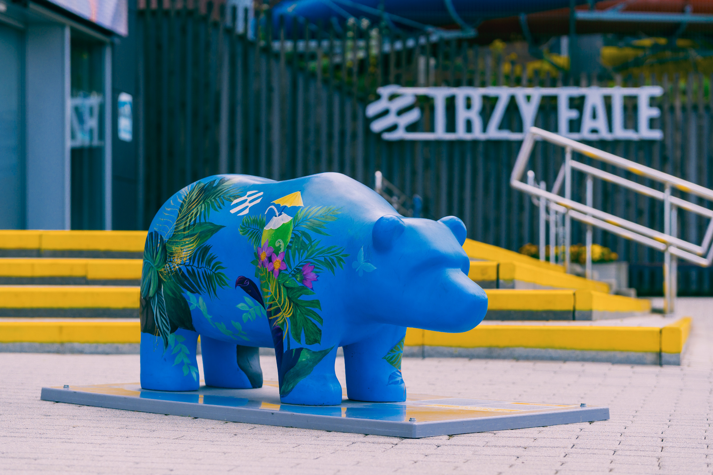
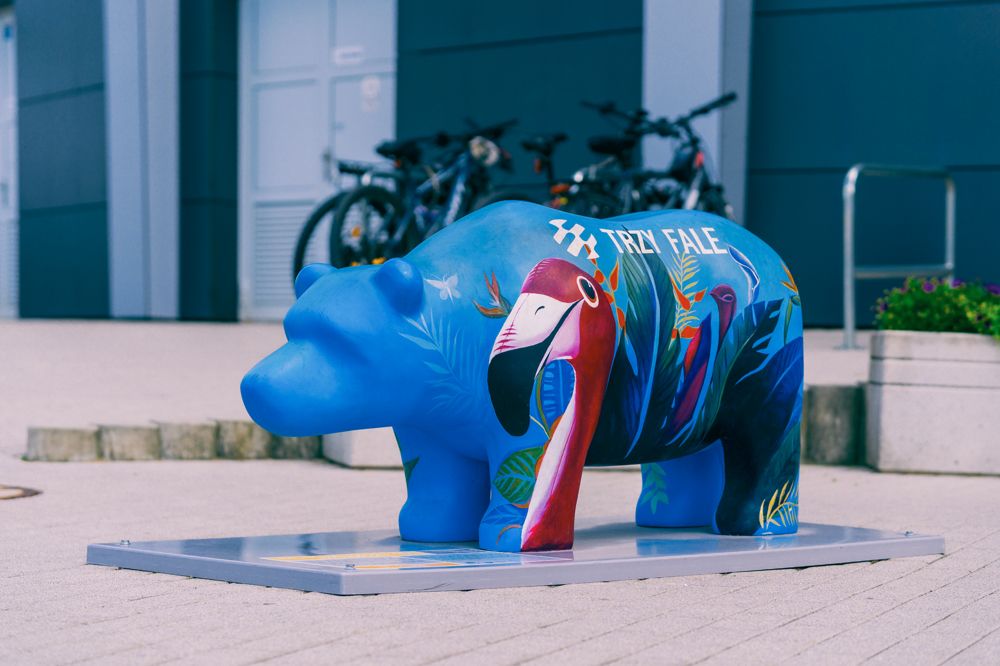
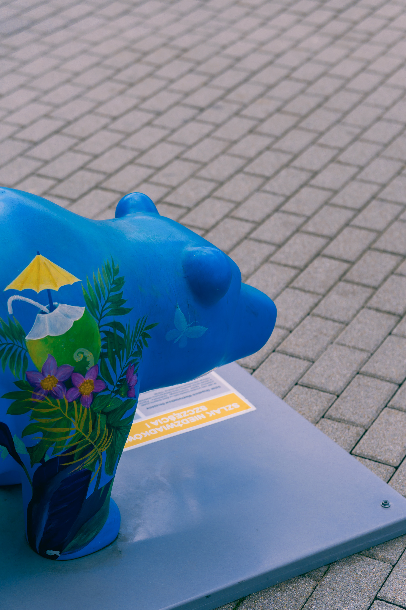
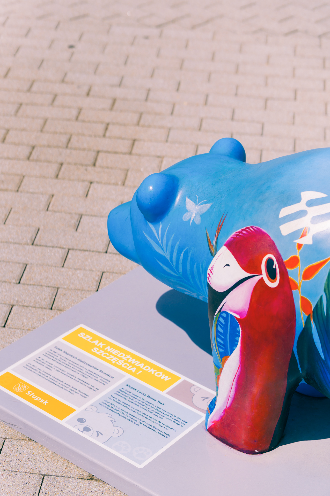

Niedźwiadek Trzy Fale
Odsłonięty 2 czerwca 2025, przedstawiający maskotkę Parku Wodnego - Flaminga o imieniu Falek.

Odsłonięty 2 czerwca 2025, przedstawiający maskotkę Parku Wodnego - Flaminga o imieniu Falek.




